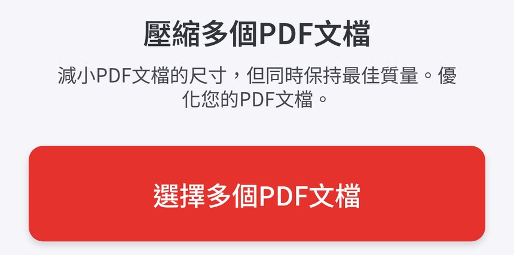
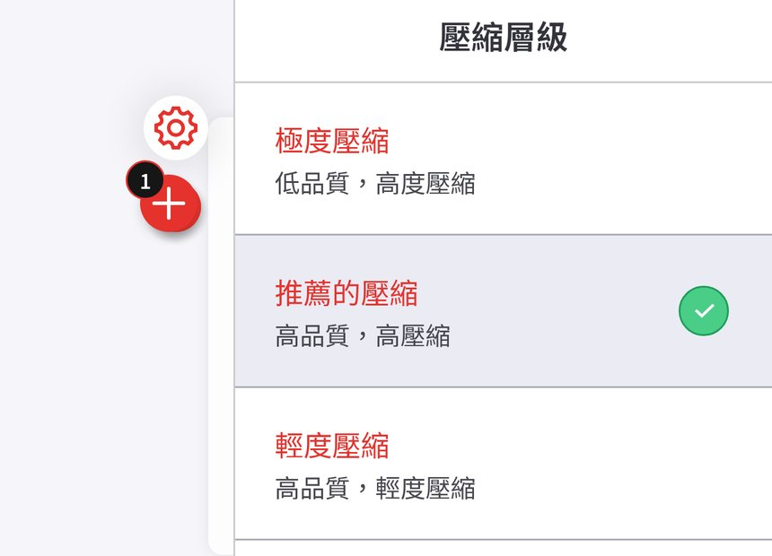
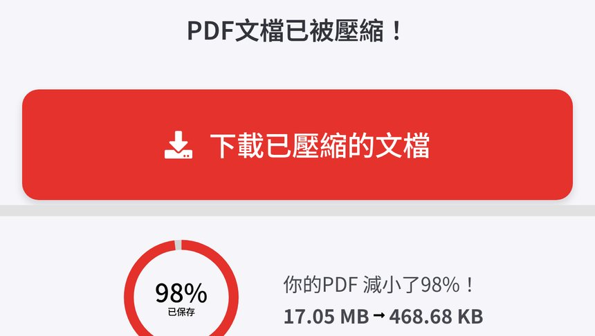

跟 Reel 用 iLovePDF 嘅「壓縮PDF」（唔使登入）：撳「選擇多個PDF文檔」揀掃描完嘅 PDF，壓縮層級用預設「推薦的壓縮」再撳「壓縮PDF」，見到 17.05 MB → 468.68 KB（減小 98%）就撳「下載已壓縮的文檔」。附真實畫面截圖，同私人文件、檔案上限嘅提醒。示範用虛構文件，壓縮幅度睇檔案而定。
Reel 一句講晒：掃描完申請文件 PDF 太大上載唔到？iLovePDF 免登入壓細，示範 17.05 MB → 468.68 KB
你會學到
- 點樣開 iLovePDF「壓縮PDF」唔登入揀檔上載
- 三個壓縮層級點揀，點解預設「推薦的壓縮」通常夠用
- 壓縮完點睇前後大細，下載後上載前要留意咩
開始前準備
- 手機或電腦瀏覽器開 ilovepdf.com 嘅「壓縮PDF」（示範用繁體中文頁，冇登入）
- 掃描好嘅 PDF（示範用自製虛構 4 頁申請表，17.05 MB）
- 睇清楚你要上載嗰個網站嘅檔案大細限制
3 步做法
撳選擇多個PDF文檔：開 ilovepdf.com 嘅「壓縮PDF」（唔使登入），撳紅色「選擇多個PDF文檔」，揀掃描完嘅 PDF。
頁面標題係「壓縮多個PDF文檔」；撳紅色大掣就會開檔案選擇，揀你部機入面嘅 PDF。
官方價目表寫免費 Basic 版每次壓縮檔案上限 200 MB；額度可能更新，以官網為準。

真實畫面（2026-10-07 自行截圖，冇登入）：撳紅色「選擇多個PDF文檔」揀檔。 揀推薦的壓縮：壓縮層級預設「推薦的壓縮」（高品質，高壓縮），唔使改，撳「壓縮PDF」。
畫面有三個層級：「極度壓縮」（低品質，高度壓縮）、「推薦的壓縮」（高品質，高壓縮）、「輕度壓縮」（高品質，輕度壓縮）；示範用預設「推薦的壓縮」，有綠剔。
「壓縮PDF」紅色掣喺畫面底部右邊，揀好層級再撳。如果壓完仍然太大，可以返轉頭試「極度壓縮」，但字可能冇咁清。

真實畫面（2026-10-07 自行截圖）：預設已揀「推薦的壓縮」（綠剔），之後撳畫面底「壓縮PDF」。 撳下載已壓縮的文檔：見到「17.05 MB → 468.68 KB」就撳「下載已壓縮的文檔」。
壓縮完畫面顯示「PDF文檔已被壓縮！」，下面寫「你的PDF 減小了98%！17.05 MB → 468.68 KB」。98% 係呢份示範檔嘅結果，壓縮幅度睇檔案而定。
下載後打開睇清楚字同簽名仲睇唔睇得清，先上載去對方網站。官方安全頁寫處理過嘅檔案兩小時內自動刪除，下載頁都可以自己手動刪除。

真實畫面（2026-10-07 自行截圖，上下兩段合併，中間一排分享 icon 已裁走）：見到前後大細就撳「下載已壓縮的文檔」。
常見錯誤／注意事項
- 一開始就揀極度壓縮：預設「推薦的壓縮」通常已經夠細；極度壓縮品質低，掃描字可能變矇。
- 下載完唔檢查：上載前打開睇清楚每頁字、簽名同印章仲清唔清楚。
- 唔睇對方大細限制：每個網站上限唔同，壓完都要對返對方要求。
- 私人文件照上載：身份證、銀行資料等私人文件上載前要考慮私隱；示範用虛構文件。
示範檔係自製虛構「示範申請表（虛構樣本）」，冇真人資料。私人文件上載任何網上工具之前，先諗清楚私隱風險。
香港用戶留意
ilovepdf.com 網頁版用瀏覽器開就用得，示範冇登入、冇裝 App（示範喺我哋電腦瀏覽器測）。免費額度同檔案上限以官網價目表當日為準。
官方說明
- 壓縮PDF（iLovePDF 官方工具頁，繁體中文）
2026-10-07 核實：官方壓縮 PDF 工具頁；示範冇登入，揀檔 → 揀壓縮層級（預設「推薦的壓縮」）→ 壓縮PDF → 下載 - Pricing（iLovePDF 官方價目表）
2026-10-07 核實：Filesize per task 一欄寫 Compress PDF 免費 Basic 200 MB、付費 4 GB；額度可能更新，以官網為準 - iLovePDF Security & Data Protection（iLovePDF 官方）
2026-10-07 核實：官方寫處理過嘅檔案會喺兩小時內自動永久刪除，下載頁亦可以自己手動刪除；私人文件上載前仍要自己考慮
（以上連結當日逐條打開核對；介面同額度可能更新，以官方為準）
原帖
呢則 Reel 喺 IG @rabithead1881 主頁。